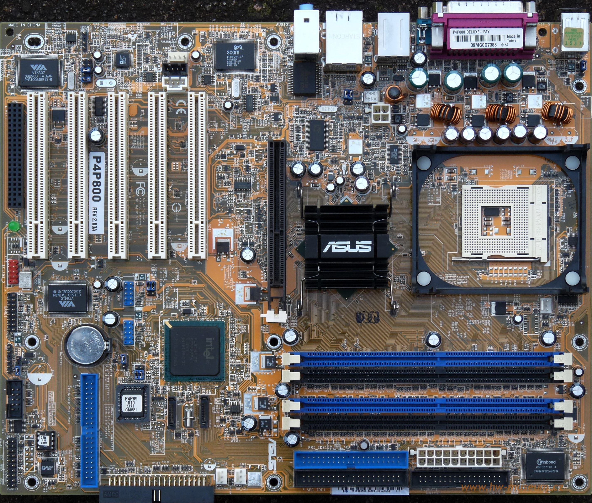

Intel Pentium 4 işlemciler için tasarlanmış, dönemin yüksek performanslı ve genişletilebilir anakart çözümü.
| Özellik | Değer |
|---|---|
| Soket | Socket 478 (Intel Pentium 4) |
| Chipset | Intel 865PE + ICH5R |
| RAM | 4x DDR400 DIMM Slot |
| PCI | 5x PCI, 1x AGP 8X |
| Depolama | ATA133, Serial ATA RAID |
| Ek Özellikler | Gigabit LAN, FireWire, 6x USB 2.0 |